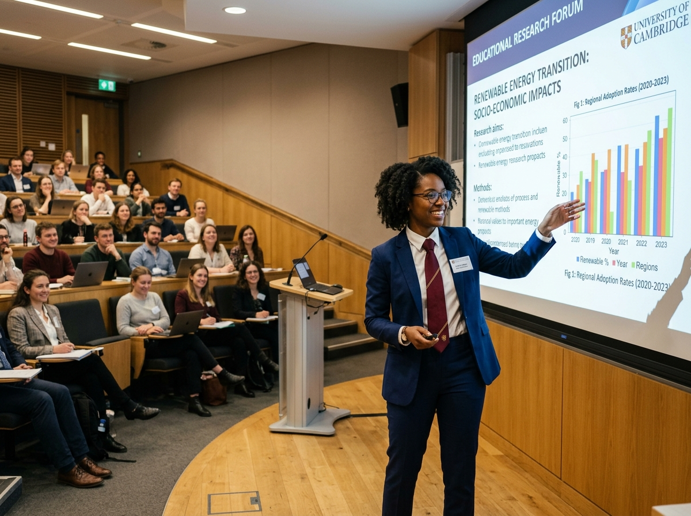
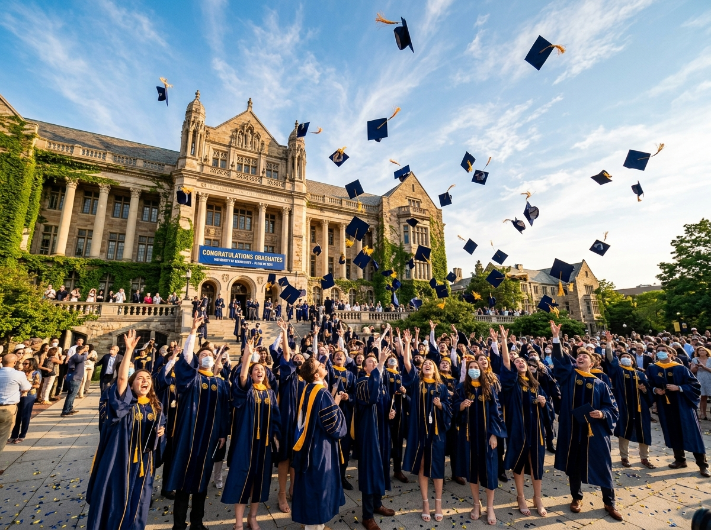

Prosesi Sidang Terbuka
Sabtu, 24 Oktober 2026
Pukul 08.00 WIB s/d 11.30 WIB
Auditorium Utama Universitas
The Graduation of
Program Studi Statistika Terapan
Dengan penuh rasa syukur ke hadirat Tuhan Yang Maha Esa atas karunia dan rahmat-Nya, sehingga dapat menyelesaikan masa studi dan meraih gelar kesarjanaan.
Jl. Otto Iskandardinata No. 64C, Jatinegara, Jakarta Timur, DKI Jakarta 13330
Area parkir tersedia di Gedung Parkir Barat dan Lapangan Utama. Titik temu ramah keluarga berada di selasar Gedung Rektorat.

Langkah awal pembuktian gagasan riset. Di hadapan para dosen pembimbing dan penguji, rancangan metodologi penelitian dipaparkan dengan penuh debar, persiapan matang, dan ribuan catatan perbaikan berharga.

Tahap pengolahan data riil dan pengujian model statistik. Hari-hari penuh coding, pembersihan data, serta begadang di laboratorium hingga akhirnya temuan riset teruji secara ilmiah dan siap dipertahankan.
Pintu gerbang kelulusan akhir. Pertanyaan demi pertanyaan penguji terjawab tuntas. Rasa haru dan syukur membuncah ketika kata "Dinyatakan Lulus dengan Pujian" dikumandangkan oleh dewan penguji.

Puncak rasa syukur dan persembahan tanda bakti untuk orang tua tercinta. Pengalihan kuncir toga menjadi saksi permulaan darma bakti nyata bagi bangsa dan sesama.